Willow Hollow — 전략 & 사업성 판단 문서
"왜 이 게임을 만들고, 돈이 되는가"에 답하는 투자·그린라이트 심사용 마스터. Gossip Harbor 벤치마킹 분석 → 시장·타겟 → 컨셉 확정 → 이코노미·가격·LTV·손익 → 검증 → 법무의 한 흐름. 제품 구현·제작 상세는 제품·프로덕션 기획·SRS로 분리했다.
Executive Summary
"샤크핀(급등 후 급락)" 현상이 지배하는 모바일 시장에서 Gossip Harbor는 거의 선형에 가까운 안정적 성장을 보였다. 핵심은 화려한 신규 메커니즘이 아니라 검증된 머지-2 코어 + 여성 코어 타겟 몰입 스토리 + 촘촘한 라이브옵스 + 하이브리드 수익화의 정교한 결합이다.
시장 & 성과 진단
Gossip Harbor가 왜 이겼는지를 UA·리텐션·인게이지먼트·수익 효율 4개 축으로 분해한다. 경쟁작 대비 낮은 ARPDAU에도 불구하고 매출 1위라는 사실이 이 게임의 본질을 설명한다.
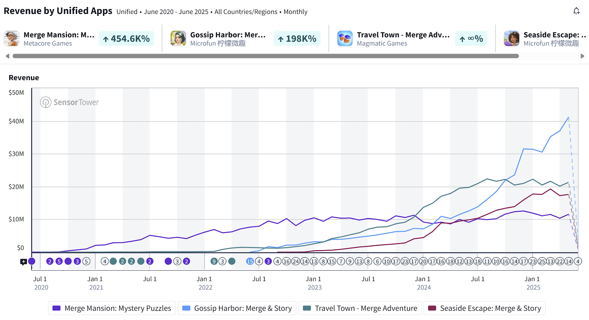
핵심 경쟁 지표 벤치마크
| 지표 | Gossip Harbor | Travel Town | Merge Mansion | 시사점 |
|---|---|---|---|---|
| D1 리텐션 | 46% | 40% | 57% | 초반 훅 강함(코어 여성타겟) |
| D7 / D30 / D60 | 26 / 15 / 12% | 22 / 13 / 9% | 33 / 22 / 18% | Travel Town 상회, 장기 안정 |
| 주간 세션 수 | 41 | 32 | — | +27% 더 자주 접속 |
| 주간 플레이 분 | 186분 | 128분 | — | +45% 더 오래 체류 |
| ARPDAU | $0.26 | $0.35 | — | 객단가는 25% 낮음 |
| 유료 UA 다운로드 비중 | 78% | 55% | 39% | 공격적 UA, 광고비는 TT의 절반 이하 |
타겟 & 오디언스 전략
Gossip Harbor의 성공은 "코어 타겟에게 사과 없이(unapologetically) 헌신"한 데서 나온다. 79% 여성 · 평균 32세 (올드 밀레니얼 여성)라는 명확한 타겟에 스토리·데코·코어를 전부 정렬시켰다.
스토리 = 타겟 정서
주인공 Quinn은 이혼 후 아버지의 불탄 레스토랑을 재건하는 싱글맘. 아마추어 탐정이 되어 음식 중독 사건을 파헤친다. 드라마·로맨스·미스터리·사보타주 — 진범/불륜 콘텐츠를 소비하는 타겟 취향과 정확히 일치.
데코 메타 = 자기표현
레스토랑 리노베이션에서 플레이어가 디자인을 직접 선택(3종 중), 언제든 페널티 없이 변경 가능. Travel Town(시티빌더)·Merge Mansion(고정 데코)과 달리 자기표현 동기를 자극.
코어 = 직관적 릴랙스
머지 보드 = Quinn의 주방. 손님 주문을 머지로 충족. Travel Town·Merge Mansion처럼 무관한 아이템을 조합하지 않아 캐주얼 유저에게 훨씬 직관적.
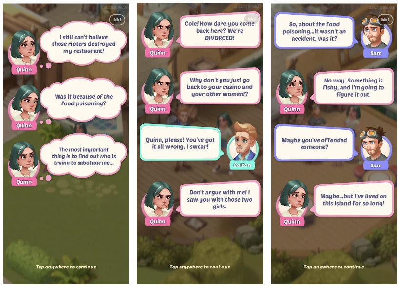
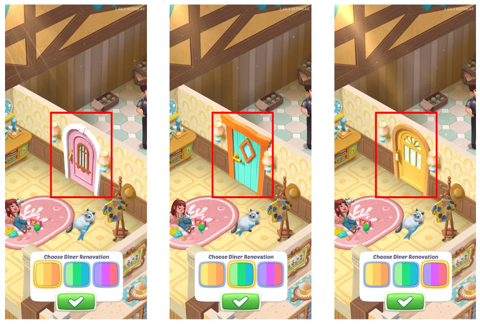
코어 게임플레이 구조
전형적 머지-2 루프지만, 각 스텝이 "고민 없는(no-brainer) 결정"으로 설계되어 캐주얼 유저의 인지 부하를 최소화한다.
스토어에서의 자기 소개 — GH는 자신을 Gossip / Help Them / Story / Merge / Design 5축으로 내세운다. 코어(머지)만이 아니라 스토리·데코를 앞세워 타겟 정서를 먼저 건드리는 포지셔닝이다.
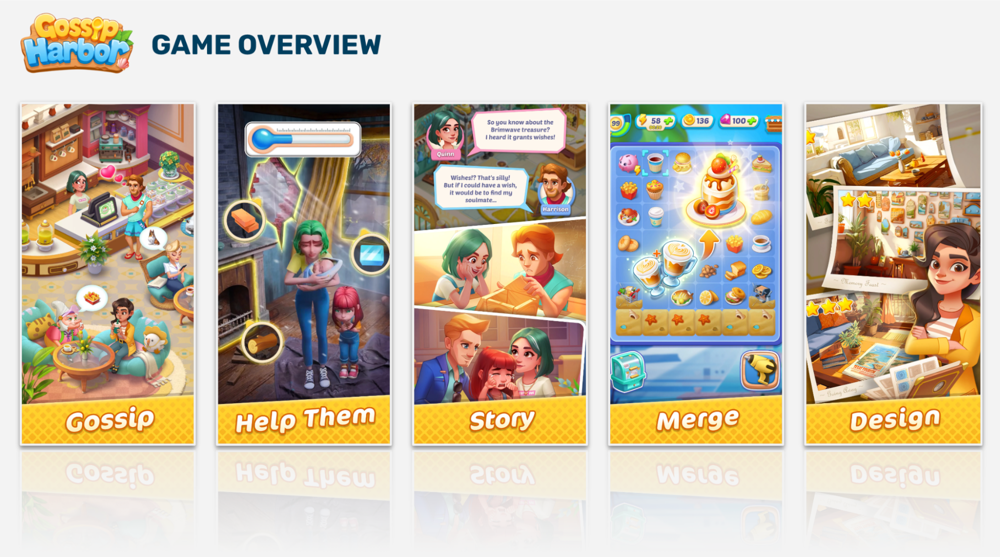
위 루프의 실제 도식 — 앞서 설명한 폐순환(제너레이터→머지→서브→코인→진행→레벨업)을 DoF가 정리한 원본 다이어그램. 각 스텝이 다음 스텝에 자원을 공급하며 자연스럽게 순환한다.

설계 디테일 (벤치마킹 포인트)
- 코인의 단일 목적: 코인은 오직 "스토리 진행/리노베이션"에만 쓴다. 어디에 쓸지 고민할 필요 없음 → 매 세션 시작 시 코인부터 소진하게 유도(세션 리듬 형성).
- 넥스트 내러티브 하이라이트: 세션 시작마다 다음 스토리 조각을 강조 표시. 코인이 충분하면 자동으로 투자 유도 → 무결정 진행.
- 세션 완결감: 주문 등장에 쿨다운. 어려운 주문만 남기고 종료해도, 다음 세션엔 쉬운 주문이 새로 생성 → 매 세션 완결 가능한 목표 보장.
- 지수적 머지 비용: 레벨 15 아이템 = 레벨1 아이템 16,384개 필요(≈ 젬 $256어치 에너지). 진짜 비용이 유저에게 안 보임 → 과금 깊이 확보.
- 레어 드롭: 감자 등 희귀 드롭 10% 확률 → 레벨은 낮아도(7레벨) 실질 에너지 요구는 10배. 도박적 재미 + 과금 훅.
- 오더 퀘스트: 전용 제너레이터, 512아이템/43일 완주 설계의 장기 목표. 데코 보상 지급.
- 제너레이터 부스터: Lv15 (+1레벨/2배 에너지), Lv40 (+2/4배) — Coin Master식 라이트 도박 + 에너지 소비 속도↑.
피처 언락 페이싱
| 플레이어 레벨 | 언락 (경과 시간) | 의도 |
|---|---|---|
| Lv 2 | 보드 기프트 (~5분) | 즉각 보상 습관 |
| Lv 3 | 스타터팩 · 커피 제너레이터 (~10분) | 첫 오퍼 노출(10분) |
| Lv 4 | Great Deals 오퍼 (~15분) | 과금 옵션 조기 학습 |
| Lv 6 | 경쟁 이벤트 (~25분) | 라이브옵스 진입 |
| Lv 10 | 시즌 패스 · 크로스프로모 (~60분) | 모든 이벤트 프레임 개방 |
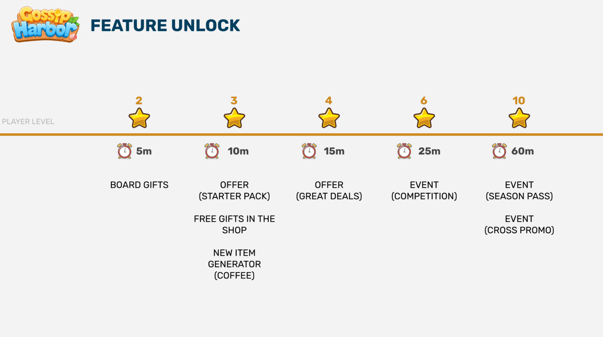
→ 2세션 내 Lv10 도달하도록 초반 에너지를 넉넉히 주고, 첫 1시간 안에 여러 오퍼·이벤트를 모두 경험시킨다.
이코노미 설계
두 개의 통화로 "인지 부하 낮은 소프트 통화 + 다목적 하드 통화"를 명확히 분리했다. 에너지를 조여 세션당 소비 속도를 통제하는 것이 수익화의 핵심 레버.
단일 목적 = 스토리 진행/리노베이션. 상점에서 직접 구매 불가(피기뱅크 제외). 소비처 고민 제로 → 인지 부하 없음.
다목적 = 에너지 리필 · 아이템 구매 · 상점 리프레시 · 타이머 스킵 · 버블 · 인벤토리 확장 · 이벤트. 직접 구매 가능.
과금 깊이를 숨기는 지수 곡선 — 상위 레벨 아이템일수록 비용이 기하급수로 뛴다. 레벨15 하나 = 레벨1 아이템 16,384개(≈$256어치 에너지). 유저는 이 진짜 비용을 체감하지 못한 채 깊게 소비하게 된다.
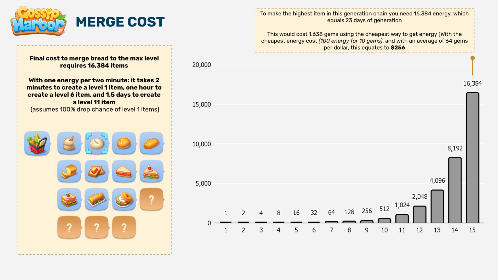
하드 통화 가격 — 저가 진입점 전략 — GH(좌)와 Travel Town(우)의 젬 상점 비교. GH는 낮은 가격대를 더 촘촘히 깔아 무·저과금까지 소비 습관을 심는다.
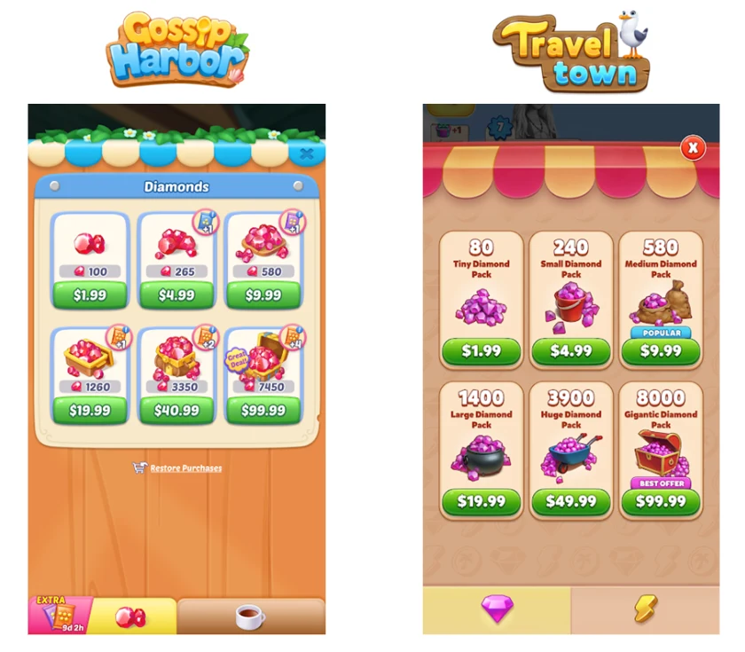
에너지 = 수익화의 목줄
- 타이트한 에너지 통제: 보상형 광고 무료 에너지 드립이 Travel Town보다 40% 낮음. 세션 연장을 유료화.
- 스케일링 리필: 첫 리필은 10젬으로 저렴(무·저과금 유저 포함) → 사용할수록 비용 상승(고과금 대상). 하루 첫 리필은 시즌 포인트도 지급되어 "기분 좋은 소비" 설계.
- 에너지 팩: 350 / 570 / 780 에너지. 4배 부스터 사용 시 780을 7분에 소진 → 스펜드 속도 극대화. 미전환 시 가격 동적 인하.
라이브옵스 & 이벤트 프레임워크
Gossip Harbor를 경쟁작과 진짜로 가르는 지점. 이벤트가 코어 루프를 "엔진"으로 사용하기 때문에 카니발라이제이션(모드 간 시간 잠식)이 없다.
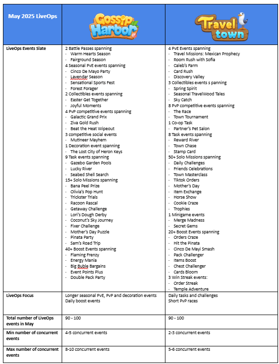
이벤트 계층 구조
🌸 시즌 이벤트 (Bloomin Season)
30일 장기 아크. 매일 에스컬레이팅 목표 7종(주문/코인) + 젬 소비 퀘스트 + 100에너지 루핑 목표. 58,500포인트 필요. 초반 쉽고 후반 급격히 어려워짐(마지막 스테이지 = 첫 10스테이지 합). 초기엔 유료 캐치업 없었으나, 이후 50% 포인트 보너스 구매 옵션 추가.
🎲 Lucky Larks (Monopoly Go식)
주문 완수로 주사위 획득 → 보드 이동 → 이벤트 상점 구매. 7스테이지, 90만+ 포인트. 스테이지 비용 26배 에스컬레이션(1→7). 데코 + 아바타 보상. 대표적 패스트 팔로우 적응 사례.
🪙 Lori's Dough Derby (수집 이벤트)
3일 멀티데이. 톱니파형(sawtooth) 밸런싱으로 비용이 계속 오르지 않아 진입 부담 적음. 3,550코인 / 10 마일스톤. 코어 목표(코인/주문)를 강화.
🏆 Ziva's Goldrush (경쟁 이벤트)
1 vs 4+ 토너먼트. 사실상 "다른 플레이어를 배경으로 한 싱글 이벤트". 캐주얼 M3에서 검증된 포맷, 이해·참여 쉬움.
장기 아크의 상업화 — 시즌 패스 — 무료/유료($4.99·$7.99) 트랙 구조. 독점 스킨 없이 머지 아이템만 담아 보상 가치가 불투명한 점은 우리가 개선할 지점(→ 투명한 가치 소구).

이벤트 롱테일 설계 — Lucky Larks — 7스테이지 보상 구성(트리맵). 후반으로 갈수록 요구·보상 규모가 급증(1→7 약 26배)해, 하이엔게이지 유저만 끝까지 가는 롱테일을 만든다.
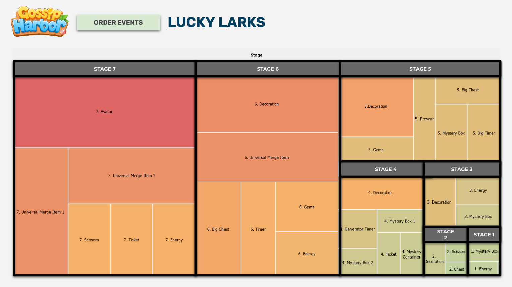
라이브옵스 진화 여정 — 월 20 → 100 이벤트
GH의 매출은 "한 방"이 아니라 2년에 걸친 라이브옵스 진화가 만든 것이다. AppMagic 데이터는 월 이벤트 수가 20 → 50 → 100으로 두 번의 스파이크를 그리며 성장했음을 보여준다. 매출 급등은 이벤트 증설 "직후"가 아니라 백그라운드에서 누적된 라이브옵스 완성도가 유저 행동을 바꾼 결과로 뒤따랐다. 이것이 가장 중요한 벤치마킹 포인트다.
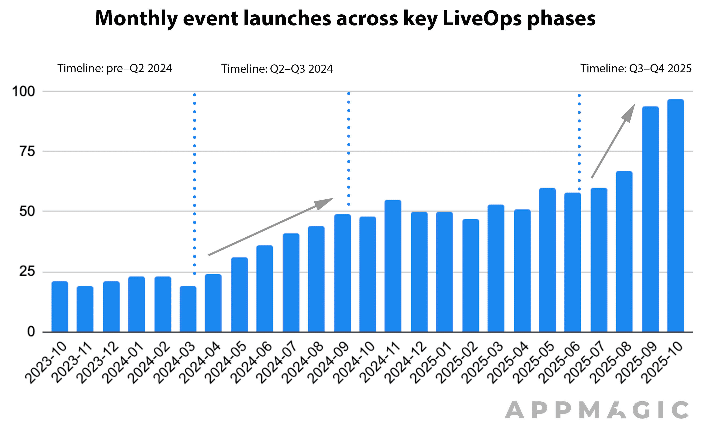
2차 스파이크의 대표 신규 메커닉 — Win Streak — Restaurant Goals: 주간 목표를 3연속 달성하면 최상위 보상, 한 주라도 놓치면 리셋. 다른 이벤트 태스크와 연동돼 라이브옵스 전체를 촘촘히 연결한다.
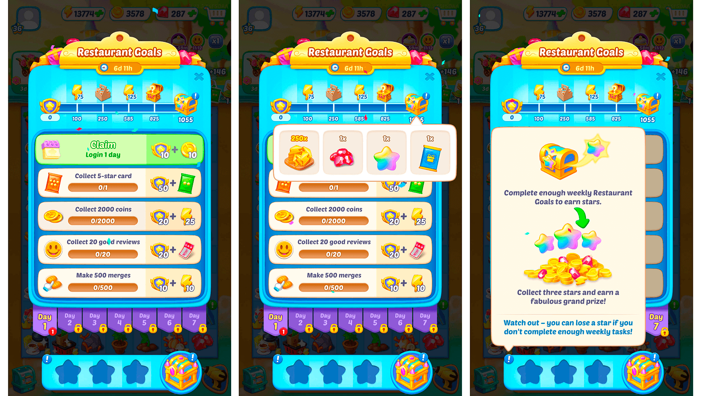
"한 메커닉에 베팅 안 함"의 증거 — 분기별로 Race·Win Streak·Lava Quest·Lucky Wheel·Fishing 등 다양한 포맷을 동시에 굴린다. 유형별 스펜드 모먼트를 촘촘히 커버하는 것이 GH 라이브옵스의 핵심.
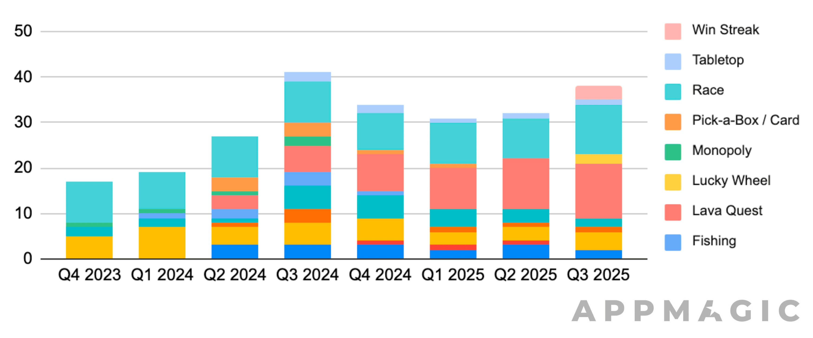
이벤트 메커닉 다양성 (분기별 믹스)
GH의 진짜 강점은 "많이 돌린 것"이 아니라 "올바른 것을 골라 영구 루프로 만든 것". 다양한 포맷을 병렬로 운용해 유저 유형별 스펜드 모먼트를 촘촘히 커버한다.
수익화 구조
IAP 중심 + 보상형 광고 15-20% 상단 기여. 핵심은 "고래를 조이는 깊은 이코노미"와 "무·저과금을 태우는 하이브리드 수익화"의 동시 운용.
IAP — 젬 팩 & 번들
- 젬 팩 $1.99–$99.99. 달러당 50–84젬(최고는 $39.99), 평균 64젬/달러.
- 테마 번들: 큰 히어로 이미지 중심 → "배너 블라인드니스" 리스크(가치 소구 불명확).
- 에너지 팩 동적 가격: 미전환 시 다음 노출 때 인하.
- 오퍼 타입: 유저 저니 / 에너지(에스컬레이팅) / 시즌 / 이벤트 아이템.
보상형 광고 — 다이내믹 하이브리드
- 동적 배치: 유저가 필요할 때 딱 등장(에너지/타이머/버블). 저가치 보상만.
- 서프라이즈&딜라이트 → FOMO로 접속 유도.
- Unity 리서치: 보상형 광고 시청자는 구매 확률 4.5배, D30 리텐션 3.5–5배.
- 주의: 과금 후 에너지 체스트 광고 제거 → 과금 유저가 징벌적으로 느낄 수 있음.
수익화 스택의 진화 (라이브옵스와 동반 성장)
AppMagic 분석: GH의 수익화는 라이브옵스 그리드와 단계적으로 함께 진화했다. 각 레이어가 서로를 대체하지 않고 서로 다른 스펜드 모먼트를 커버한다.
| 레이어 | 도입 시점 | 설명 |
|---|---|---|
| 클래식 팩 · 젬 번들 | 기초 (Phase 0) | 기본 IAP. 강한 긴급성 없음 |
| Buy All / Pick-one 딜 | Phase 0→1 | 3티어 + "전체 구매(30% OFF)" → 평균 결제액 상승 (예: Santa's Grab Bag) |
| 1+1 번들 | Phase 1 | "1개 사면 1개 무료". 이해 쉽고 고압 이벤트 대비 자원 비축 → ARPPU↑ |
| 2티어 시즌패스 | Phase 1 | VIP Pass(코어 보상) + Super Pass(고가치 보너스·추가 시즌포인트) (예: Oceanic Season) |
| 이벤트 연장 오퍼 | Phase 1 | 막판 태스크용 추가 시간·이벤트 통화. "진척 잃기 싫은" 유저 소프트 넛지 |
| 에스컬레이팅 데일리 번들 | Phase 2 | 매일 새 옵션 언락, 최종 보상은 전부 구매 시 (Three-Pack Gift). 데일리 체크인 리듬과 정합 |
| 이벤트별 프로그레션 패스 | Phase 2 | 이벤트 내 별도 보상 트랙 + VIP 티어 (Purrfect Progress). 시즌패스 위 2차 진행 레이어 |
매출 구성 (Phase 1 말 기준, AppMagic)
→ 핵심: 매출의 60%+가 "이벤트에 묶인 오퍼"다. 상시 상점이 아니라 라이브옵스 흐름 안에서 소비가 발생하도록 설계됐다.
타겟 시장조사 — 시니어 북미 여성
원작 GH의 타겟은 "30대 여성(평균 32세)"이다. 본 섹션은 최초 가정(시니어 50세+, 특히 55–70대) 하의 조사이며, 이후 플랫폼 분석(8b)을 거쳐 확정 타겟은 40–65세 북미 여성으로 재보정됐다 — 조사 결과 자체는 시니어 친화 설계의 근거로 유효하다. 이 섹션은 다중 출처 조사(AARP·AppMagic·GameRefinery·학술지)를 종합해 이 세그먼트의 규모·장르 선호·UX 요구·테마 적합성을 데이터로 검증하고, 그로부터 컨셉·아트톤·설계 원칙을 도출한다.
① 세그먼트 규모 — "실버 게이머"는 크고 돈을 쓴다
→ 시니어 여성은 규모·인게이지먼트·지출 모두 매력적이면서 경쟁이 상대적으로 덜한 세그먼트. 광고주·퍼블리셔가 주목하는 이유다.
② 장르 선호 — 결정적 인사이트
| 발견 | 수치 | 출처 |
|---|---|---|
| 50+ 최애 장르: 퍼즐/로직 | 73% | AARP 2023 |
| 50+ 카드·타일 게임 | 69% | AARP 2023 |
| 50+ 워드 게임 | 58% | AARP 2023 |
| 모바일 퍼즐 게이머 중 여성 비중 | 76% | FinancesOnline |
| 50+ 퍼즐 일 플레이 시간 (전 연령 중 최다) | 17.6분 | Adjoe |
| Merge Dragons 플레이어 여성 비중 | 70% | GameRefinery |
| Merge Dragons 플레이어 45세+ 비중 | 31% | GameRefinery |
| Merge-2 (Complex Meta) 매출 성장 YoY | +94% | AppMagic H1 2025 |
③ 시니어 UX 요구 — GH 설계와 충돌 지점
타이머·시간압박 기피 (가장 중요)
학술 연구(JMIR): 노년층은 시간압박 메커니즘이 불안·스트레스를 유발해 적극 기피. → GH의 에너지·타이머 압박 수익화와 정면 충돌. 시니어 타겟은 타이머를 최소화하고 느긋한 페이스로 재설계 필요.
가독성·접근성
보조 텍스트 ≥20pt·핵심 ≥30pt, 대비 4.5:1(WCAG 2.2). 비슷한 색/모양 오브젝트 구별 어려움 → 핵심 아이템 시각적 차별화. 컨트롤 크기·간격 확대, 개념 단순화.
비폭력·친숙한 콘텐츠
노년층은 비폭력·문화적으로 친숙한 콘텐츠 선호. "생소하면 안 된다"는 요구와 정확히 일치 → 판타지/난해한 세계관보다 익숙한 일상·자연·핸드메이드 소재가 안전.
정서 톤
GH 광고는 100% 가족 고난·66.7%가 "고난 지속"으로 마무리(Segwise). 시니어 여성엔 고난 자극보다 따뜻함·성취·위안의 톤이 더 맞을 가능성 → 크리에이티브 A/B 필요.
④ 경쟁 차별화 가드레일 — Microfun 영토 & 자사 포화 소재 회피
⑤ 후보 컨셉 — 시장 적합성 & 경쟁 중복 평가
| 컨셉 | 친숙도 | 차별화 | 경쟁 중복 | 평가 |
|---|---|---|---|---|
| D. 보태니컬 힐링 빌리지 (온실·공방·웰니스 구역 재건) | 높음 | 높음 | 낮음 | 코티지코어·핸드메이드·셀프케어는 시니어 여성 검증 정서(Gardenscapes류). 밝은 톤은 Flambé류 강점 계승 + FB 머지에 사실상 부재한 화이트스페이스. 채택 |
| A. 골동품점 복원 (노스탤지어) | 매우 높음 | 중간 | 중간 ⚠️ | 향수·유품 서사는 시니어 정서에 맞지만, Microfun 복원 서사 공식과 톤이 겹칠 위험 → 폐기 |
| E. 요리·카페 머지 | 매우 높음 | 낮음 | 매우 높음 ⚠️ | Piece of Cake·Merge Haven·Love&Pies·Gossip Harbor 등 FB 머지 최다 포화 소재 → 회피 |
| F. 여행·관광 머지 | 높음 | 중간 | 높음(자사 내부) ⚠️ | Travel Town류 검증 장르이나 자사 포트폴리오 내 여행 소재 과다 → 카니발라이제이션 우려로 회피 |
| B. 마법 마을 코지 판타지 | 낮음 | 매우 높음 | 낮음 | 판타지는 "친숙 콘텐츠 선호"와 상충 위험. 차별화 최고이나 생소함 리스크 |
배포 플랫폼 분석 — Facebook Instant Games
우리는 Facebook/Instagram(FB Instant Games)에 배포한다. 이는 App Store/Google Play와 오디언스·수익화·경쟁 구도가 전혀 다른 결정적 변수다. 결론부터: 이 플랫폼 선택은 우리 타겟(시니어 여성)과 자연 정합하지만, 페이드 UA·경쟁 테마·타겟 폭을 재보정해야 한다.
① 플랫폼 = 타겟과 정합 (하지만 폭 재보정 필요)
👍 왜 정합하는가
Facebook 유저층은 모바일 스토어보다 고령. 미국 45–54세가 일일 참여 최고(76%), 50–64세 강세, 65+도 10%↑로 증가. 캐주얼 게임은 여성 편중(캐주얼 플레이어 중 여성 25–44세가 61% 차지). → 시니어 친화 게임의 천연 서식지.
⚠️ 재보정 포인트
단, FB 캐주얼 과금 스위트스팟은 25–44세 여성이 가장 두껍다. 55세+ 시니어층에만 좁히면 유효 모수가 준다. → 타겟을 "40–65세 북미 여성"으로 확정했다. 시니어 친화 UX(큰 폰트·논타이머)는 배제가 아닌 차별점으로 유지.
② 수익화·기술 제약 (기획 전제)
- HTML5 인스턴트 게임(≤200MB, 경량) — 1인 플레이 코어·멀티플랫폼 포팅 결정과 정합.
- 머지 게임 매출은 IAP 중심(광고는 보조). Meta 수익 배분 70/30.
- 스토어 앱 대비 그래픽·용량 제약 → 가볍고 명료한 아트가 유리(시니어 가독성 요구와도 일치).
③ FB 머지 경쟁 지형 (제공 스크린샷 분석)
FB "Merge Games" 허브의 Most played / Top grossing 리스트를 테마별로 분류. 무엇이 이 플랫폼에서 실제로 통하는지 보여준다.
| 테마 클러스터 | 대표작 (플레이어/순위) | 플랫폼 성과 |
|---|---|---|
| 복원 드라마 (GH식·여성 감정 썸네일) | Merge Haven(496K·최다), Mansion Tale: Merge Secrets(103K), Merge Dream Hotel(77K), DesignVille(112K) | 최다 플레이 + 상위 그로싱. 가장 붐비는 레드오션 |
| 판타지/마법 | Mergest Kingdom(그로싱 2위), Fairyland Merge & Magic(그로싱 4위), Merge Legends, Merge Lagoon(149K), Elves/Goblins/Elf | 그로싱 상위 다수 — FB에서 판타지는 검증됨 |
| 감각/추상/숫자 | Piece of Cake(그로싱 1위·팝잇), 2020 Connect, Dice-Merge, Merge The Numbers | Piece of Cake 그로싱 1위 — 단순·촉각 테마도 강세 |
| 팜/자연/트로피컬 | Tropical Merge(그로싱 3위), Farm Merge Valley(56K), MergeVille(45K) | 안정적 중상위 |
| 미스터리/고딕 | Lamplighter(61K·그로싱 7위, 등불 든 여성) | 소수지만 존재·검증 — 어두운 톤은 우리와 결이 다름 |
| 보태니컬/공방/힐링 빌리지 | — (부재) | 💡 화이트스페이스 — FB 머지에 없음 |
② 판타지(B안)는 FB에서 그로싱 검증됨(Mergest Kingdom·Fairyland) — "생소함 리스크"가 App Store 데이터보다 낮음. 완전 배제 대신 이벤트/스핀오프 테마 후보로 보관.
③ UA 크리에이티브는 "감정적 캐릭터 드라마"가 승자(Merge Haven 우는 신부 등). 밝은 힐링 톤이라도 표정 풍부한 인간 주인공 + 따뜻한 감정 훅(할머니의 편지·마을의 비밀)으로 광고를 만들어야 FB에서 먹힌다.
경쟁 포지셔닝
머지 시장은 두 축 (캐주얼↔코어) × (라이브옵스 헤비↔라이트)로 매핑된다. Gossip Harbor는 캐주얼 + 라이브옵스 헤비 사분면을 장악했다. 우리는 여기에 인접하되 빈 공간을 노린다.
| 타이틀 | 포지션 | 메타 | UA 크리에이티브 전략 |
|---|---|---|---|
| Gossip Harbor | 캐주얼 · 라이브옵스 헤비 | 내러티브 + 리노베이션 | 감정적·논란성 (Playrix/Hero Wars/Lily's Garden식) |
| Travel Town | 중간 · 라이브옵스 중 | 내러티브 + 라이트 시티빌딩 | 미스터리 스토리 + 셀럽 콜라보 (Royal Match/Candy Crush식) |
| Love & Pies | 캐주얼 · 라이브옵스 라이트 | 내러티브 중심 | GH가 코어를 벤치마킹한 원형 |
| Merge Mansion | 코어 · 라이브옵스 중 | 미스터리 + 고정 데코 | 최고 리텐션, 좁은 TAM |
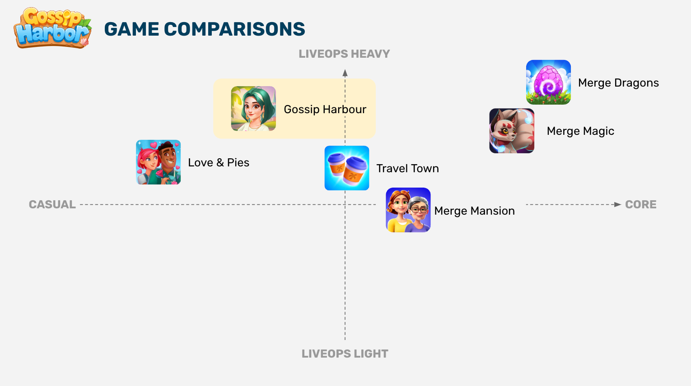
Gossip Harbor의 Proven / Better / New
- 캐주얼 아트 스타일
- 내러티브
- 코어 게임플레이
- 리스토레이션
- 세일즈
- 시즌 시스템
- 이벤트 프레임워크
- 스토리 드리븐
- 유저 저니 머지 체인
- 이벤트 내 난이도 에스컬레이션
→ 시사점: 정상 타이틀조차 "발명"은 New 칸 2개뿐. 대부분 Proven+Better다. 우리도 코어는 검증된 것을 완성도로 이기고, New는 1–2개에 집중한다.
우리가 만들어야 할 강점 포인트
시장조사·플랫폼 분석 결과, 우리의 1번 해자는 "소셜"이 아니라 "타겟·플랫폼·정서의 정렬"이다. 즉 시니어 북미 여성 × FB Instant Games × 보태니컬 힐링 빌리지 화이트스페이스라는 미개척 교차점을 선점하는 것. 5개 축에서 차별화 강점을 만든다.
기회 = 미개척 교차점 + GH의 빈틈
강점 ① 타겟·플랫폼 정렬 (1번 해자)
30대 여성·App Store 중심. 시니어 여성·FB Instant Games는 직접 겨냥하지 않음.
40–65세 북미 여성 × FB(고령·여성 편중 플랫폼) × 보태니컬 힐링 빌리지(FB 머지 화이트스페이스) 삼중 정렬. 경쟁이 비어 있는 자리.
강점 ② 시니어 친화 설계
고밀도 보드·작은 UI·에너지/타이머 압박 → 노년층엔 불안·피로.
논타이머 느긋한 페이싱(노년층 타이머 기피 반영), 큰 폰트·고대비·명료 아트(WCAG 2.2). 접근성 = 차별화.
강점 ③ 투명한 가치 소구
번들이 큰 히어로 이미지 중심 → "배너 블라인드니스". 보너스 가치·최적 가격 미표기.
명확한 "이만큼 이득" 태그·비교 UI. 신뢰 기반 전환율↑, 과금 후회↓ (시니어 신뢰 특히 중요).
강점 ④ 밝은 힐링 감정 스토리
자극적 막장·고난 지속 정서(선형+스킵). 시니어 여성 정서와 결이 다름.
따뜻함·회복·발견의 분기형 힐링 스토리(할머니의 편지·마을의 따뜻한 비밀 라이트 훅). FB UA 승자(감정적 캐릭터 드라마)와 정합하면서 톤은 밝고 따뜻하게.
강점 ⑤ (플러스알파·P2) 라이트 소셜/협동
GH·Travel Town·Merge Mansion 모두 영구 소셜 구조가 비어 있다. 단 우리는 1인 플레이 코어를 확정(멀티플랫폼 포팅·시니어 접근성 우선)했으므로, 소셜은 출시 후 플러스알파(선물·라이트 협동 이벤트·친구 초대)로 후행 도입해 오가닉 바이럴을 보강한다. 초기 리스크는 격리.
컨셉 제안 ✔ 확정 (D안)
시장조사(시니어 여성)·플랫폼 분석(FB Instant Games)·경쟁 가드레일을 모두 반영해 D안 — "보태니컬 힐링 빌리지 × 공방·웰니스 구역 재건"으로 확정한다. 검증된 머지-2 코어는 그대로 차용하되, 세계관·정서·페이싱을 시니어 여성 + FB 화이트스페이스에 정렬한다.
도시에서 번아웃을 겪은 40대 여성 '메이'가 돌아가신 할머니가 남긴 낡은 정원 마을 'Willow Hollow'를 물려받아 귀향해, 인생 2막으로 마을의 공방·웰니스 공간을 하나씩 되살린다. 온실·꽃집·도자기 공방·양초비누 공방·티하우스·스파·허브 약방까지 구역마다 완전히 다른 인테리어의 단층 씬으로 복원하며, 그 과정에서 할머니가 남긴 편지와 마을의 따뜻한 비밀이 조금씩 밝혀지고, 오웬(노년 도예가)·릴리(젊은 플로리스트)·준(냉소적 티마스터)·로자(허벌리스트 할머니) 같은 이웃과 회복 중인 방문객들의 이야기가 함께 펼쳐진다. 무거운 드라마·악당·미스터리가 아닌 밝고 따뜻한 힐링·슬로우리빙·핸드메이드·셀프케어의 정서. 타이틀·주인공에 연령 라벨("grandma/senior")은 쓰지 않는다. 해안·섬 배경도, "몰락한 여성의 재기" 클리셰도 쓰지 않는다.
→ 최상위 공식은 한결같이 머지+스토리+복원. 우리는 이 공식을 그대로 취하되, 소재만 비포화 영역(보태니컬 힐링 빌리지)으로 옮긴다.
게임명 & SEO/ASO 네이밍 근거
| 요소 | 선택 | 근거 |
|---|---|---|
| 브랜드 토큰 | Willow | 친숙·자연 이미지 단어 + 아스피레이셔널(트렌디, 코티지코어 무드) + 정원·힐링 콘텐츠 직접 연상. 무겁거나 노쇠한 느낌 없음. |
| 세팅 토큰 | Hollow | 코지 내륙 정원 마을 골짜기(해안 회피) + 이벤트 "새 구역" 확장에 자연스럽게 어울림 |
| 부제 | Merge & Story | 고volume 장르 키워드 — GH·Seaside 검증 패턴([짧은 친숙 제목]+[장르 부제] · 키워드는 25자 이후 부제에) |
| ASO 키워드 필드 | garden · botanical · restore · home design · decorate · puzzle · match · cozy · wellness · story | |
왜 이 컨셉인가 — 조사 근거 정합
| 조사 발견 | 컨셉 D의 대응 |
|---|---|
| 시니어 여성은 비폭력·친숙한 콘텐츠 선호 (AARP/JMIR) | 정원·공방·핸드메이드·자연 = 가장 친숙하고 편안한 소재 |
| 노년층은 타이머·시간압박 기피(불안 유발) | 느긋한 논타이머 페이싱, "가꾸는 여유" 정서로 재설계 |
| 요리/카페 머지는 이미 FB·자사 모두 포화 | 보태니컬·공방·웰니스 소재로 완전 회피 — 아트 다양성도 확보 |
| 여행 테마 매력 크나 자사 포트폴리오 내부 중복 | 여행 대신 "구역 재건"으로 다양한 씬 확보 — 카니발라이제이션 회피 |
| Microfun 3형제 = 해안/섬 + 몰락 여성 + 복원 | 해안·섬·몰락여성 클리셰 전부 회피 → 복제작으로 안 보임 |
| FB 머지에 보태니컬/힐링 빌리지 테마 부재 | 💡 화이트스페이스 선점 — 차별화 + 신선함 |
| FB UA 승자 = 감정적 캐릭터 드라마 썸네일 | 할머니의 편지·마을의 따뜻한 비밀 = 밝되 궁금한 라이트 훅으로 광고 제작 가능 |
3개 설계 필러
① 검증된 코어 (Proven)
GH식 머지-2 루프·이중 통화·지수 머지 비용·피처 언락 페이싱·이벤트 하네스를 완성도 높게 차용. 단 에너지/타이머 압박은 시니어용으로 완화(논타이머·느긋한 페이스).
② 개선된 라이브옵스 (Better)
시즌 패스 + 다층 이벤트. 투명한 가치 소구·과금 유저 존중·상시 캐치업으로 GH 실수 정정. 구역별 테마 이벤트로 무한 확장(온실 개화 시즌, 티하우스 축제…).
③ 시니어 친화 + 밝은 힐링 스토리 (New)
큰 폰트·고대비·명료한 아트·단순 조작(WCAG 2.2). 구역마다 분기 선택형 힐링 스토리(할머니의 편지·마을의 비밀·방문객 회복 아크)로 감정 몰입. 소셜/협동은 플러스알파(P2)로 후행.
차별화 요약 — vs Gossip Harbor
| 축 | Gossip Harbor | 우리 게임 (Willow Hollow) |
|---|---|---|
| 세계관 | 해안 섬·불탄 레스토랑 | 내륙 정원 마을·공방·웰니스 구역 재건 (Microfun 영토 회피) |
| 주인공 | 이혼한 싱글맘(몰락 여성 재기) | 할머니 유산을 잇는 활기찬 40대 여성 '메이' (또래 반영·인생 2막) |
| 정서 톤 | 자극적 막장·가십·고난 지속 | 밝고 따뜻한 힐링·회복·발견 (시니어 여성 정합) |
| 타겟 | 30대 여성(평균 32세) | 40–65세 북미 여성 (FB 플랫폼 정합) |
| 플랫폼 | App Store / Google Play | FB Instant Games (보태니컬 힐링 빌리지 화이트스페이스) |
| 페이싱 | 에너지·타이머 압박 | 논타이머·느긋함 (노년층 타이머 기피 반영) |
| 접근성 | 고밀도 보드·작은 UI | 큰 폰트·고대비·명료 아트 (시니어 UX) |
| 소셜 | 라이트 이벤트성 협동 | 1인 코어 확정 · 협동은 플러스알파(P2) |
로드맵 & 리스크
단계별 개발 로드맵 (컨셉 D · FB Instant Games)
주요 리스크 & 대응
| 리스크 | 내용 | 대응 |
|---|---|---|
| 보태니컬 힐링 빌리지 미검증 | FB 화이트스페이스지만 = 플랫폼 검증 데이터 없음 | Phase 0 아트/컨셉 선호 테스트 + 코어 재미 게이트로 조기 검증 |
| 타겟 모수 | 40–65세 중 55세+ 시니어층에만 좁히면 FB 과금 모수 축소 | 40–65세 전 구간 타겟 유지, 시니어 친화 UX를 차별점으로(배제 아님) |
| 논타이머 수익화 | 타이머 완화 시 GH식 에너지 압박 수익 레버 약화 | 스토리/컬렉션/시대이벤트 등 비압박형 소비 동기로 대체 설계 |
| FB 플랫폼 의존 | 단일 플랫폼 정책·수수료(70/30) 리스크 | HTML5 코어로 멀티플랫폼 포팅 여지 확보(1인 플레이 유지 이유) |
| 코어 재미 실패 | 차별화 훅 있어도 코어 약하면 리텐션 붕괴 | Phase 0에서 코어 재미 게이트 통과 필수 |
| 라이브옵스 운영 부담 | 월 100 이벤트급 그리드는 지속 콘텐츠·조직 필요 | 이벤트 템플릿/리스킨 파이프라인, 전담 조직 사전 확보 |
이코노미 수지 시뮬레이션
논타이머(무에너지/소프트에너지) 제약 아래에서 코인·젬의 소스/싱크를 수치로 역산한다. 목표는 GH식 "즐거운 소비"를 압박 없이 재현하는 것 — "부족을 느끼되 압박당하지 않는" 균형점을 D1/D7/D30 시뮬레이션으로 잡는다.
FR-PACE-01)와 초기 지표로 재튜닝한다.1) 코인 — 소스/싱크 수치
오더 보상 (3단계 난이도)
| 오더 유형 | 요구 아이템(평균 레벨) | 코인 보상 | 등장 비중 | 근거 논리 |
|---|---|---|---|---|
| 쉬움 | 1–2종 (Lv 2–4) | 30 | 50% | 세션 완결감 담당 — 항상 즉시 충족 가능 |
| 보통 | 2–3종 (Lv 4–6) | 80 | 35% | 1–2회 머지 사이클 요구 — 세션 중반 리듬 |
| 어려움 | 3–4종 (Lv 6–8) | 220 | 15% | 다음 세션으로 이월 허용(쿨다운 리필) — 압박 아닌 목표 |
| 가중 평균 / 오더 | ≈ 76 코인 (30·0.5 + 80·0.35 + 220·0.15) | |||
→ 세션당 오더 완수 8–12개(8–12분 세션, 오더당 ~60초 상당 머지)로 가정 → 세션당 코인 순생산 ≈ 610–910(가중평균 76 × 8~12). 아이템 판매 소액(+5–10%) 별도.
챕터 1→14 코인 비용 곡선 (초반 저비용 → 지수 상승)
| 챕터 | 코인 비용 | 누적 비용 | 예상 도달일* | 설계 의도 |
|---|---|---|---|---|
| Ch 1 | 150 | 150 | D1 | 즉시 첫 스토리 리빌(무결정 진행) |
| Ch 2 | 300 | 450 | D1 | 2세션 내 2챕터(훅 강화) |
| Ch 3 | 550 | 1,000 | D2 | 온보딩 종료·복원 1구역 개방 |
| Ch 4 | 900 | 1,900 | D3 | 완만 상승 시작 |
| Ch 5 | 1,500 | 3,400 | D4 | 1구역 테마 완성(온실·허브정원) |
| Ch 6 | 2,400 | 5,800 | D5–6 | 지수 기울기 진입 |
| Ch 7 | 3,600 | 9,400 | D7 | D7 리텐션 게이트 — 복원 2구역(꽃집) |
| Ch 8 | 5,200 | 14,600 | D8–9 | 중반 페이스 안정 |
| Ch 9 | 7,200 | 21,800 | D10 | 2구역 테마(도자기 공방) |
| Ch 10 | 9,800 | 31,600 | D12 | 복원 3구역 개방(양초·비누 공방) |
| Ch 11 | 13,000 | 44,600 | D14 | 2주차 콘텐츠 벽 완충 |
| Ch 12 | 17,000 | 61,600 | D16–17 | 지수 상단 |
| Ch 13 | 22,000 | 83,600 | D19 | 3구역 테마(티하우스) |
| Ch 14 | 28,000 | 111,600 | D21 | 런칭 저니 완결(2–3주) |
| *무과금 기준. 곡선 ≈ 초반 선형 → Ch6부터 매 챕터 ×1.4–1.5 지수. 진짜 비용을 체감 못하게 GH식 은닉. | ||||
→ 일일 순생산 코인(무과금, 1일 2–3세션 가정) ≈ 1,500–2,700. 누적 111,600을 ~21일에 소진 → 하루 평균 소요 ≈ 5,300. 후반부 생산<소요 구간이 "부족감"을 만들되(부스터·이벤트로 메움), 이월 허용으로 압박은 없음.
데코 슬롯 비용 (18슬롯 / 4구역, 코인+젬 이원화)
| 티어 | 슬롯 수 | 기본 디자인(코인) | 프리미엄 디자인(젬) | 비고 |
|---|---|---|---|---|
| 구역 1 (초반) | 4 | 400–800 | — | 무과금도 전부 접근(자기표현 습관) |
| 구역 2 | 5 | 1,000–2,000 | 1구역당 1–2개 60–120젬 | 3디자인 중 1은 프리미엄 |
| 구역 3 | 5 | 2,500–4,000 | 90–150젬 | 구역 테마 연동 프리미엄 |
| 구역 4 (후반) | 4 | 4,000–6,000 | 120–200젬 | 완결 보상감 |
무페널티 변경(FR-STORY)이므로 프리미엄 데코는 영구 자기표현 자산으로 지불의사↑. 기본 디자인은 항상 코인으로 확보 가능(무과금 소외 방지). | ||||
2) 젬 — 소스/싱크 단가
젬 소스 (무료 earn 추정)
일일: 데일리 로그인 5–10젬 · 데일리 태스크 3–8젬 · 오더 스트릭 2–5젬 → ≈ 12–22젬/일
주간: 레벨업(주 3–5회 × 10–20젬) 40–80 · 업적 마일스톤 20–40 · 시즌 무료트랙 30–60 · 이벤트 보상 40–90 → ≈ 220–430젬/주
근거: GH 첫 리필 10젬 = 무·저과금도 최소 1리필/주 가능한 드립. 무과금 주간 총 ≈ 300–560젬.
젬 싱크 (단가)
보드 확장: 1칸열 120젬 / 스토리지 +2슬롯 80젬 (편의)
선택 부스터: 생성기 부스트 30–60젬 · 리롤 20젬 (선택적·비압박)
컬렉션: 앨범 페이지 완성 40–100젬 (수집)
데코 프리미엄: 60–200젬 (자기표현)
이벤트: 캐치업/포인트팩 50–150젬 (진행 단축)
소프트에너지 모드시: 첫 리필 10젬(관대) — 압박형 레버 아님
3) 무과금 유저 D1/D7/D30 수지 시뮬레이션
| 구간 | 코인 누적 earn | 코인 누적 spend | 코인 잔고 | 젬 누적 earn | 젬 누적 spend* | 젬 잔고 | 체감 |
|---|---|---|---|---|---|---|---|
| D1 | 4,000 | 450 (Ch1–2) | 3,550 | 25 | 0 | 25 | 풍요 — 첫날 훅 |
| D7 | 18,500 | 14,600 (~Ch8) | 3,900 | 310 | 200 | 110 | 여유 有, 살짝 계획 필요 |
| D30 | 72,000 | 111,600 (Ch14 完)+데코 | 낮음(수시 0 근접) | 1,150 | 1,050 | 100 | 부족감 有 · 압박 無 |
| *젬 spend는 무과금이 편의/수집에 쓰는 선택 소비 가정(강제 아님). D30 코인은 후반 챕터·데코가 생산을 앞질러 "조금 더 벌어야 하는" 상태를 의도적으로 유지. | |||||||
4) 논타이머 ARPDAU 가설
| 젬 싱크 항목 | 매출 비중(가설) | 지불 동기 | 비압박 정합 |
|---|---|---|---|
| 스페셜오퍼·스타터·번들 | 50% | 가치 인식(묶음 할인) | ○ 압박 무관 |
| 데코 프리미엄·구역테마 | 18% | 자기표현(영구 자산) | ○ 논타이머 핵심 |
| 시즌패스 | 14% | 진행 가치·수집 | ○ |
| 이벤트 캐치업·포인트 | 10% | 진행 단축(선택) | ○ |
| 보드/스토리지 확장·부스터 | 8% | 편의 | ○ |
| (소프트에너지시) 에너지 리필 | 0–10% | 세션 연장(관대) | △ soft 모드 한정 |
| GH 실측 구성(스페셜오퍼 62%/젬 18%/패스 10%)에서 압박형 에너지 매출을 자기표현·수집으로 대체한 재배분. 가정: DAU 페이드무료 혼합, 결제전환 무에너지에서 소폭 낮음. | |||
→ 핵심 가정: ARPDAU 하락분을 리텐션(D7≥22%)·인게이지먼트(세션≥8분)·낮은 UA 비용으로 상쇄(GH 논리 계승). 목표대는 $0.10–0.15 밴드. 미달 시 §22 플랜 B(소프트에너지 토글).
가격표 & 논타이머 수익화 근거
젬팩·스타터·시즌패스의 확정 가격표와, "에너지 압박 없이도 ARPDAU $0.10–0.15+가 가능한가"에 대한 업계 사례 기반 근거를 정리한다. Meta 수수료 70/30 반영, GH 젬 벤치(50–84젬/달러, 평균 64) 참고.
1) 젬팩 6단계 가격표
| 가격 | 젬 수량 | 달러당 젬 | 보너스% | 가치 태그(배너 블라인드니스 방지) |
|---|---|---|---|---|
| $0.99 | 50 | 50 | 0% | 진입 티어(습관 형성) — 태그 없음 |
| $4.99 | 280 | 56 | +12% | 인기 (Popular) |
| $9.99 | 620 | 62 | +24% | — |
| $19.99 | 1,340 | 67 | +34% | 최고 가치 (Best Value) |
| $49.99 | 3,650 | 73 | +46% | +보너스 데코 스킨 동봉 |
| $99.99 | 8,400 | 84 | +68% | +한정 아바타·구역테마 조기해금 |
달러당 젬 50→84로 GH 밴드 하단→상단을 그대로 재현(평균 64 부근). 가치 태그 원칙: 한 티어에만 "Best Value", 저가는 촘촘히 깔아 무·저과금 습관을 심고($0.99·$4.99), 고가에 비화폐 프리미엄(스킨·아바타)을 얹어 자기표현 지불의사와 연결. | ||||
2) 스타터팩 · 데일리 스페셜 · 시즌패스
🎁 스타터팩 $2.99
250젬 + 프리미엄 데코 1종(구역1) + 스토리지 +2슬롯 + 부스터 3회. 1회 한정·Lv3 노출. 젬 단독 대비 체감가치 ≈ 2배 태그. 첫 결제 장벽 낮추는 가치 소구형 앵커.
⭐ 데일리 스페셜
매일 회전 오퍼 $0.99–$4.99: 데코 스킨/부스터 묶음/코인+젬 콤보. 미전환시 가격 동적 조정(압박 아닌 가치 제안). 표시가·할인율 명시(GH 배너 블라인드니스 회피).
🌸 시즌패스 (30일·3티어)
무료: 코인·부스터·젬 소액 상시 드립.
유료 $4.99: +프리미엄 데코 2종·젬 300·구역테마 조기.
슈퍼 $7.99: 유료 전부 +즉시 10티어 스킵·한정 아바타·데코 3종. 상시 캐치업(후회 방지).
3) 논타이머 수익화 근거 (업계 조사)
머지·캐주얼 장르에서 에너지 압박 없이도 유의미한 IAP가 성립하는지 웹 조사로 확인했다. 결론: 지불 동기를 "압박 해소"에서 "가속·수집·자기표현·편의"로 옮기면 성립하며, 실제 선두작들이 이 축으로 매출의 상당분을 낸다.
| 레버 | 지불의사 근거 | 업계 사례 (조사) | 우리 적용 |
|---|---|---|---|
| 수집 | 완성 강박·소유욕. 압박 무관하게 작동 | 화장품·수집형이 기대 상회, 시즌 컬렉션 월간 릴리스가 표준 | 컬렉션 앨범·구역테마 세트 |
| 자기표현 | 영구 자산·사회적 표현. 경쟁우위 없는 코스메틱이 전환율↑ | Gardenscapes/Homescapes 데코 과금, 코스메틱 주 1–2종 릴리스 최적 | 데코 프리미엄·무페널티 변경 |
| 진행 단축 | 세션 제한·기다림에 지불(난이도보다 제약에 지불) | Love & Pies: 쿨다운 젬 스킵·머지 업셀 버블·영구 세일 번들 (Naavik) | 이벤트 캐치업·부스터(선택) |
| 편의 | 보드/스토리지 여유에 지불(마찰 제거) | Merge Dragons! 무광고 IAP·보드 확장형 (Udonis) | 보드/스토리지 확장 |
| 벤치 앵커: Merge Mansion ARPDAU $0.21(에너지 더블링 5젬 의존)인데도 GH·TT보다 낮음 → 에너지 압박이 ARPDAU 상한을 보장하지 않음. 하이브리드 캐주얼 IAP ARPDAU 밴드 $0.15–0.50(코스메틱 주도). Love&Pies는 에너지 100 정적풀 + 다각화 IAP로 Merge Mansion보다 RPD 성장 앞섬 → 비압박 레버 조합만으로 $0.10–0.15+ 도달 근거. | |||
4) 리스크 콜아웃 — 플랜 B
FR-PACE-01의 리모트 토글로 energy_mode: none → soft를 클라이언트 업데이트 없이 즉시 전환한다. 관대한 소프트에너지(첫 리필 10젬·무에너지 정원 생성기 상시 유지)로 세션 연장 매출(0→최대 10% 비중)을 열되, 압박형(타이머 스킵·조이기)은 여전히 금지. A/B 세그먼트로 리텐션 손실 vs ARPDAU 상승을 저울질해 세그먼트별 최적 모드를 확정한다.비즈니스 케이스
본 섹션의 모든 수치는 공개 벤치마크 기반 추정치이며, 실제 운영 데이터로 갱신이 필요합니다. Meta 수수료 30% 반영, GH ARPDAU $0.26 기준 적용. 논타이머 ARPDAU 가설은 §21–22에서 상세화되며 여기서는 기준 가정으로만 인용합니다.
1. ARPDAU 기준 및 플랫폼 맥락
FB Instant Games 캐주얼 ARPDAU
네이티브 모바일 캐주얼: $0.08–$0.15. 머지 하이브리드(IAP+IAA): $0.15–$0.28 추정. 본 프로젝트 기준 ARPDAU: $0.18 — GH $0.26의 ~70%(FB 접근성 할인 + 논타이머 프리미엄 상쇄 전 보수 추정).
GH 벤치마크 인용
Gossip Harbor ARPDAU $0.26(스토어 IAP). 머지-2 검증 상단 벤치마크 → 낙관 목표선. 논타이머 프리미엄은 본 섹션에서 중립 가정.
2. LTV 추정 — 3 시나리오
리텐션 곡선 → 평균 수명 → ARPDAU × 수명 = LTV. 모든 수치 가정 기반.
| 항목 | 보수 | 기준 | 낙관 | 근거 |
|---|---|---|---|---|
| D1 리텐션 | 38% | 42% | 48% | 게이트 ≥40%; GH 46% |
| D7 리텐션 | 19% | 23% | 28% | 게이트 ≥22%; GH 26% |
| D30 리텐션 | 8% | 13% | 18% | 캐주얼 머지 10–18% |
| 평균 수명(일) | 14 | 22 | 38 | 지수감쇠 적분 |
| ARPDAU | $0.13 | $0.18 | $0.24 | 기준 $0.18 |
| LTV(ARPDAU×수명) | $1.82 | $3.96 | $9.12 | 추정 |
| 수수료 반영 순LTV | $1.27 | $2.77 | $6.38 | IAP 70%·실효 ~21% |
−7 / ln(D7/D1). 실제 코호트 없으므로 소프트런치 후 실측(Mixpanel/Firebase)으로 교체.3. CPI 가정 — FB/IG 캐주얼 + 시니어 여성 보정
| 항목 | 기준값 | 적용 | 근거 |
|---|---|---|---|
| FB/IG 캐주얼 퍼즐 CPI(미국) | iOS $3.0/And $2.0 | $2.50 | Liftoff·Admiral 2025 |
| 35+ 여성 보정 | +20–40% | ×1.30 | 타겟 협소 → CPM↑ |
| FB Instant 채널 보정 | −15–25% | ×0.80 | 전환 마찰 감소 |
| 유효 CPI | — | $2.60 | 추정 |
| 오가닉 비중(초기) | 25–35% | 20% | GH 유료 78% |
| 블렌디드 CPI | — | $2.08 | $2.60×80% |
4. LTV > CPI 성립 — ROAS·회수
| 시나리오 | 순LTV | CPI | LTV/CPI | D90 회수 | 판정 |
|---|---|---|---|---|---|
| 보수 | $1.27 | $2.08 | 0.61× | 61% | UA 중단 |
| 기준 | $2.77 | $2.08 | 1.33× | 103%(D90 회수) | 진행 가능 |
| 낙관 | $6.38 | $2.08 | 3.07× | D30 이내 회수 | 공격 스케일 |
5. 손익분기 모델
월 고정비 $15K–$40K 범위 가정(소규모 팀; 상세는 §27). Meta 30% 반영.
| 항목 | 저단($15K/월) | 고단($40K/월) |
|---|---|---|
| 순 ARPDAU(수수료 반영) | $0.18 × 0.70 = $0.126 | |
| 손익분기 DAU | ~3,970 | ~10,580 |
| 손익분기 월매출(gross) | $21,400 | $57,100 |
| +UA 가산 시 필요 DAU | +$10K→~6,600 | +$20K→~15,300 |
검증 계획 상세
§23 비즈니스 케이스가 어느 시나리오가 현실인지 소프트런치 이전에 조기 판별하는 것을 목표로 한다. Phase 0(프로토) → Phase 1(소프트런치) → Phase 2(글로벌)의 단계별 게이트 구조.
1. Phase 0 — 프로토 검증 설계
정량 (FB 소액 광고)
타겟 40–65 여성 · n=200–300 설치 · 2주 · 예산 $500–800(CPI $2.60) · 크리에이티브 스토리 vs 메커닉 A/B. 측정: D1·튜토완료·세션·D7·CPI
정성 (인터뷰)
모집: FB 시니어 그룹·UserTesting/Respondent 패널·지인 스노볼. 40–65 여성 5–8명, 60분 Zoom think-aloud+인터뷰. 관찰: 가독성·오조작·정서 반응·이탈 포인트
| 에너지 A/B | 조건 | n | 판정 기준 |
|---|---|---|---|
| A(논타이머) | 에너지 없음 | 100+ | D7≥22% & 세션수≥4/일 시 가설 지지 |
| B(소프트) | 60분 재충전·상한5 | 100+ | A와 리텐션 차 ±5%p 이내면 에너지 제거 유지 |
2. 판정 매트릭스
| 지표 | 통과(진행) | 조건부(재조정) | 실패(재고) |
|---|---|---|---|
| D1 리텐션 | ≥40% | 35–39% | <35% |
| D7 리텐션 | ≥22% | 18–21% | <18% |
| 튜토 완료율 | ≥80% | 70–79% | <70% |
| 세션 시간 | ≥12분 | 8–11분 | <8분 |
| 정성 가독성 오류 | 1인 ≤2회 | 3–5회 | ≥6회 |
| 에너지 A/B | A가 B −3%p 이내 | A가 B −5%p | A가 B −8%p↓ |
3. 소프트런치 계획
지역
1순위 캐나다·호주(영어권·미국 상관 높음·CPI 20–35%↓). 2순위 뉴질랜드·아일랜드(표본 보완).
기간·예산
4–8주(D30 코호트+D7 2회전) · UA $10K–30K · 목표 설치 n=3,000–8,000 · FB 캠페인 80%+오가닉 20%
| KPI | 소프트런치 목표 | 글로벌 진행 게이트 |
|---|---|---|
| D1 / D7 / D30 | ≥40 / ≥22 / ≥10% | ≥42 / ≥24 / ≥12% |
| 튜토 완료율 | ≥80% | ≥82% |
| D7 ARPDAU | ≥$0.12 | ≥$0.15(기준 시나리오) |
| 실측 CPI | ≤$3.50 | ≤$2.80 |
| 크래시율 | ≤1% | ≤0.5% |
법무 · 정책 체크리스트
개발 착수·출시 전 반드시 클리어해야 할 상표·플랫폼 정책·개인정보·확률형 공시. 각 항목의 현재 상태와 액션을 정리한다.
1. 상표 & 스토어 중복
| 확인 항목 | 현재 상태 | 액션 |
|---|---|---|
| "Willow Hollow" 게임 앱 중복 | 1차 웹검색상 동명 게임 미발견(확정 아님) | USPTO TESS·App Store·Google Play·FB 정식 검색 필수 |
| 상표 등록(US/CA/EU) | 미실행 ("필요"로만 표기) | USPTO·CIPO·EUIPO 검색 + 출원 계획, 변호사 의견서(권장) |
| 유사명 리스크 | "Willow Creek"류 지명형 상표 다수 — 완전 동일명 여부만 확인되면 리스크 낮음 | Willow Hollow 유지 시 클래스 9/41 상표 서치 |
2. Meta 플랫폼 & 확률형 아이템 공시
| 항목 | 요구/리스크 | 우리 대응 |
|---|---|---|
| IAP 결제 | Meta Instant Games 결제 API 준수(플랫폼 정책·수수료 70/30) | FR-MON-01 서버 영수증 검증 연계 |
| 확률형 공시 (핵심) | 럭키 드롭(레어 10%)·pity 존재 → 미 FTC Section 5 적용. 2025.1 FTC×Cognosphere $20M 합의: 정확한 확률·희귀 획득 실화폐 비용 범위 구매화면 공시 + 직접 화폐 구매 옵션 요구 | 인게임 확률 표시 + 젬 직접구매 경로 상시 제공 + pity 명시 |
| 콘텐츠 가이드라인 | Instant Games 심사·광고 통합 정책 | 보상형 광고 정책 준수·심사 체크리스트 |
| 미성년 보호 | 타겟 40–65라 리스크 낮음. 단 연령 미표기 유입 대비 | 연령 게이트·부모동의 정책은 표준 준수 |
3. 개인정보 (북미)
| 규정 | 적용 | 액션 |
|---|---|---|
| CCPA(캘리포니아) | FB 계정 연동·IAP 이력 서버 저장 → 적용 | 개인정보 처리방침·옵트아웃·삭제요청 대응 |
| PIPEDA(캐나다) | 소프트런치 지역 → 적용 | 동의·데이터 처리 고지 |
| FB SDK 데이터 공유 | 분석·광고 데이터 범위 | 공유 범위 명시·최소수집 원칙 |
| Privacy Policy | 스토어·플랫폼 필수 | 출시 前 Privacy Policy·ToS 초안 확보 |
4. 출시 前 법무 체크리스트 (요약)
- ☐ "Willow Hollow" USPTO/CIPO/EUIPO + 3개 스토어/FB 중복 검색 완료
- ☐ 상표 출원(또는 사용가능 확인) · 필요 시 대안명 확정
- ☐ 인게임 확률 공시 + 젬 직접구매 경로 구현(FTC 정합)
- ☐ Privacy Policy·ToS·CCPA/PIPEDA 준수 문서 확보
- ☐ Meta Instant Games 정책·결제·광고 심사 체크리스트 통과
출처: Deconstructor of Fun — "Finding Genre Success: the Case of Gossip Harbor" (Jesper Gustavsson, 2024.08.19) · Naavik Digest — "Gossip Harbor's Meteoric Rise in Merge" (Oindrila Mandal, 2025.06.22) · AppMagic — "Gossip Harbor's LiveOps Journey: From 20 to 100 Events a Month" (Maria Bolshman & Alina Zlotnik, 2025.12.11). 시장조사: AARP·GameRefinery·JMIR·Statista·AppTweak 등. 데이터: Sensor Tower, AppMagic, Pathmatics, Unity Research.
본 문서는 내부 기획 검토용이며 외부 배포를 금합니다. · Willow Hollow · 전략·사업성 판단 문서 v2.0 (분석+전략+컨셉+사업성) · 제품 기획은 vintage_lane_production.html